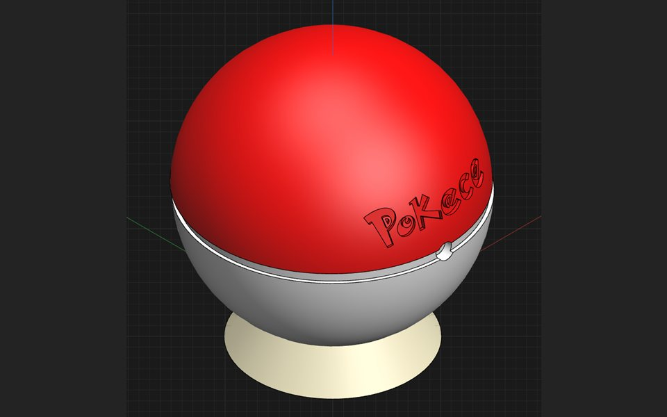
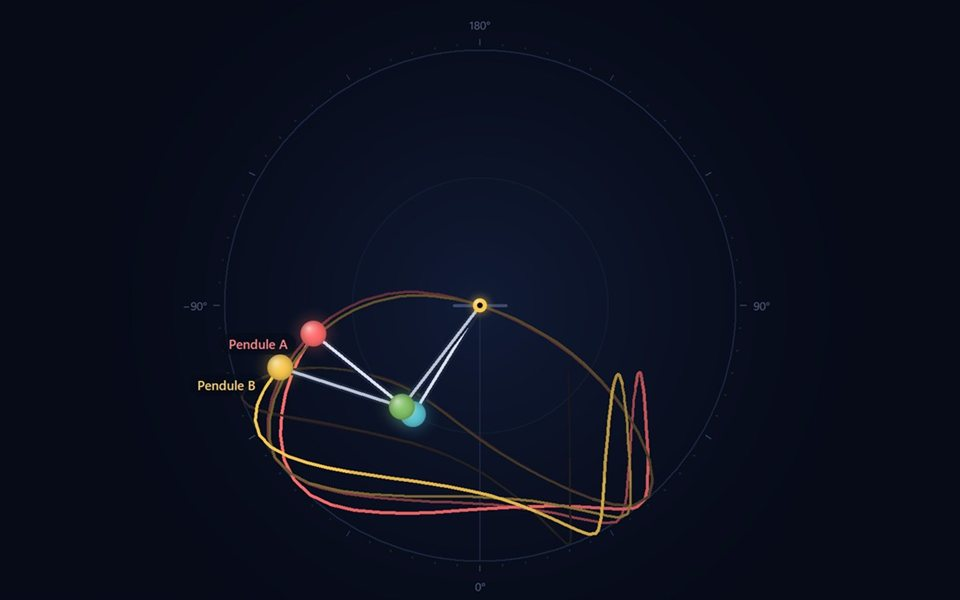
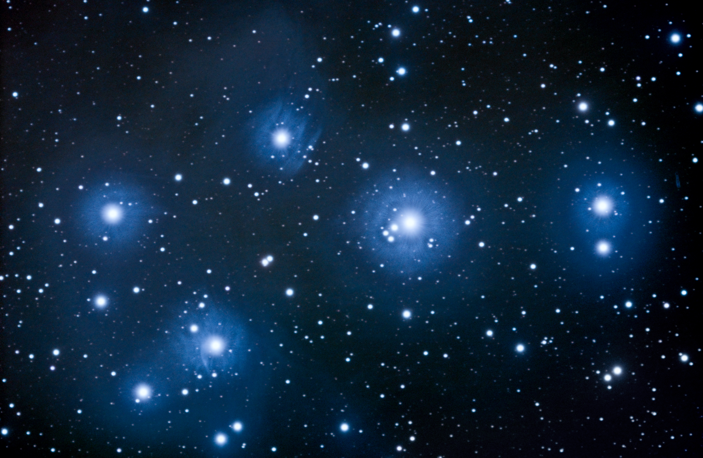
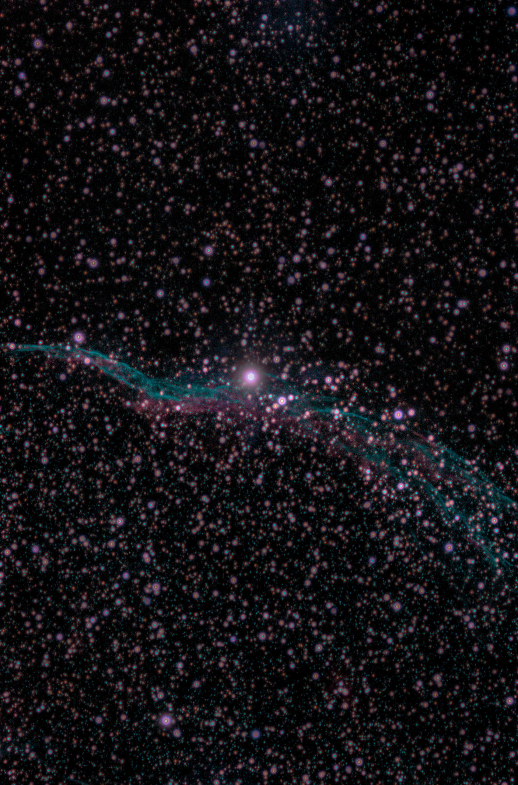
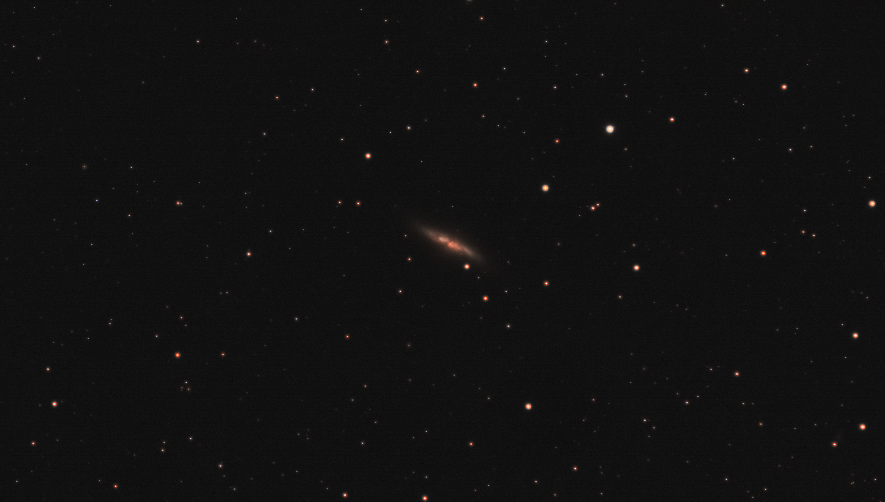
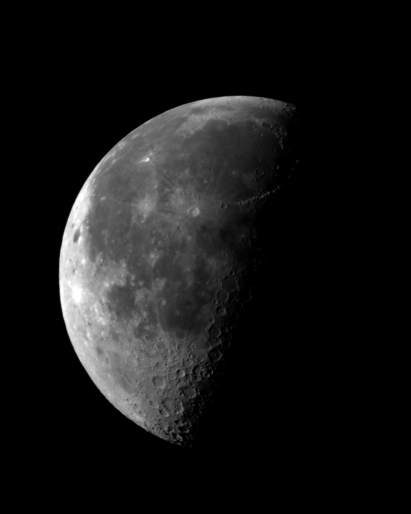

Portfolio d'électronique embarquée
Je conçois des cartes électroniques et le firmware qui les fait fonctionner, du schéma jusqu'aux mesures.
Étudiant en M1 Systèmes embarqués à l'ECE Paris
Électronique embarquée
Instrumentation · Signal
Projets
Une sélection de projets que j'ai conçus et réalisés, de la carte au code. Chaque fiche détaille la démarche, les choix techniques et les mesures obtenues.

ECEPilot
Robot rover piloté en Wi-Fi avec perception LiDAR 360° : trois microcontrôleurs et une télécommande sur PCB conçu sous KiCad.
Voir le projet
Neural Speech
Reconnaissance vocale embarquée : un « Pokédex » qui reconnaît le mot prononcé grâce à un réseau de neurones exécuté sur un Arduino Due.
Voir le projet
Double pendule interactif
Simulateur en Python : intégration Runge-Kutta 4, carte du chaos par exposant de Lyapunov et recherche de mouvements périodiques.
Voir le projetCompétences
Les langages et outils que j'utilise, avec le contexte dans lequel je les ai pratiqués.
Électronique numérique & FPGA
- VHDL · SystemVerilogDescription de circuits numériques
- QuartusSynthèse et implémentation sur FPGA
- Circuits numériquesCours FPGA (ECE) et Digital Circuit (Ajou University)
Embarqué & signal
- C / C++Firmware sur Arduino Due (Cortex-M3), ATmega328P et ESP32
- Assembleur · MPLAB XProgrammation bas niveau de microcontrôleurs
- Traitement du signalAcquisition ADC par interruptions et filtre RIF en temps réel
Conception & CAO
- KiCadPCB de la télécommande du robot ECEPilot
- ProteusSimulation de circuits
- Shapr3DModélisation 3D
Programmation & outils
- PythonModélisation de données, simulation numérique, entraînement d'un CNN
- ROS2 · Linux embarquéRobot ECEPilot, cours de Linux embarqué
- Java · LaTeXProgrammation objet, rédaction technique sur Overleaf
Langues : français (natif) · allemand (bilingue, Abitur) · anglais (professionnel, TOEIC 825/990) · coréen (débutant)
Parcours
Étudiant en M1 Systèmes embarqués à l'ECE, je m'intéresse à l'électronique embarquée, à l'instrumentation et au traitement du signal.
Formation
-
Sept. 2023 — aujourd'hui
Cycle ingénieur, M1 Systèmes embarqués
ECE École d'ingénieurs, Paris · Programme Grande École
Électronique fondamentale, FPGA, microcontrôleurs, calcul embarqué, Linux embarqué, traitement du signal, électromagnétisme, programmation C/C++ et Python. Classé 1er sur 104 étudiants en 2025-2026.
-
Sept. — déc. 2025
Semestre de mobilité internationale
Ajou University, Suwon (Corée du Sud)
Algorithmique, circuits numériques, IT English, AI for Business.
-
2020 — 2023
Abitur (mention très bien) et baccalauréat (mention bien)
Lycée Saint-Sigisbert, Nancy
Double diplôme franco-allemand, spécialités mathématiques et physique-chimie.
Expériences & engagements
-
Juin — juil. 2026
Stage, outils Python pour l'ingénierie
SFE Process, Tomblaine · procédés hautes pressions et CO2 supercritique
Outil de modélisation de données expérimentales (régressions linéaires et exponentielles) pour identifier les régimes de solubilité, d'interaction et de diffusion d'un procédé au CO2 supercritique.
-
Janv. — févr. 2025
Stage ouvrier
SODEL Électricité, Nancy · installations courant fort et faible
Câblage, raccordement, contrôle et maintenance d'installations électriques.
-
Févr. 2026 — aujourd'hui
Vice-président de l'EQCE
Association de mathématiques et d'informatique quantique de l'ECE, Paris
Organisation d'événements scientifiques, conception et pilotage d'un parcours de 20 heures reliant les fondamentaux mathématiques à l'informatique quantique.
-
Janv. 2025 — juin 2026
Tuteur en mathématiques, physique et électronique
ECE Association de Tutorat, Lyon
Accompagnement individuel d'étudiants, avec des explications adaptées à leur niveau ; préparation et animation de séances collectives.
Loisirs
Ce qui m'occupe en dehors de l'électronique.
Judo
- Ceinture noire1er dan
- CompétitionNiveau national
Astrophotographie
Empiler de nombreuses poses pour faire ressortir un signal très faible du bruit du capteur : du traitement du signal appliqué au ciel.
- Monture EQ5 ProÉquatoriale motorisée
- Lunette BK 80EDLunette ED de 80 mm
- Caméra ZWO ASI183 ProCaméra astronomique refroidie
Photographie
- Fujifilm X-E5Hybride APS-C
Quelques images du ciel




Cliquez sur une image pour l'ouvrir en pleine résolution.
Contact
Une question sur un projet, une idée à partager, ou simplement envie de parler d'électronique ?
Écrivez-moi !
pierre.hilaireau@edu.ece.fr